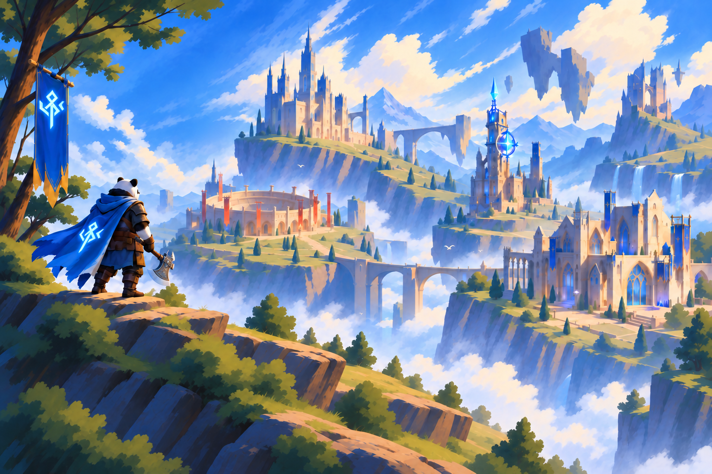

ZACK PONDGAMES · INTERACTIVE MEDIA · SOFTWARE
WELCOME TO MY REALM
I’m Zack Pond, a game developer and programmer creating games, software, and interactive experiences.
Explore the landmarks across this realm to discover my projects, technical work, and the person behind them.